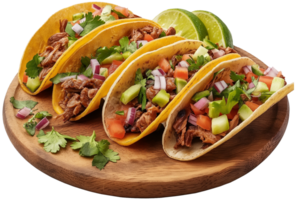
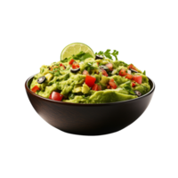
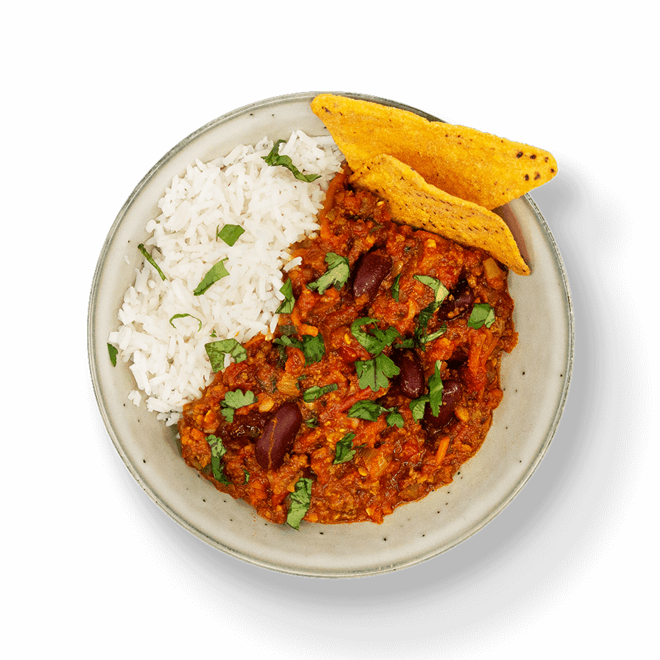
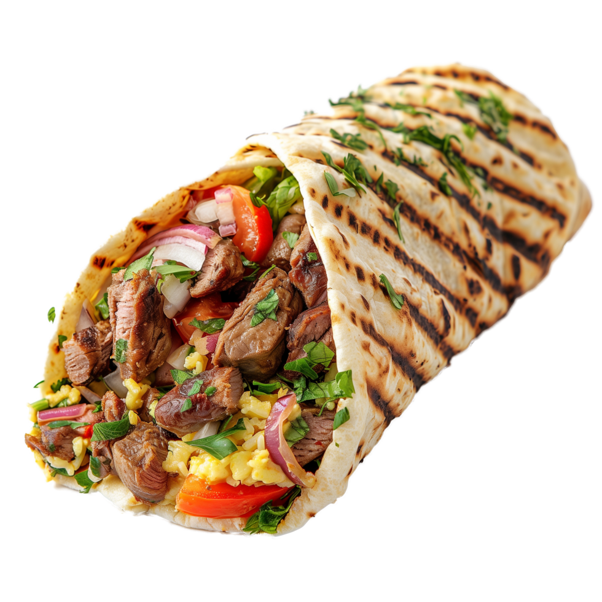

Bem-vindo à Cantina Mexicana!
Desfrute de receitas autênticas da culinária mexicana, com sabores tradicionais e irresistíveis.
Receitas Mexicanas
Tacos
Ingredientes: Tortillas, carne moída ou frango, queijo, alface, tomate, molho de pimenta e coentro.
Modo de Preparo: Cozinhe a carne ou frango e recheie as tortillas com o recheio. Adicione queijo, alface, tomate, coentro e molho de pimenta a gosto. Sirva imediatamente.
Guacamole
Ingredientes: 2 abacates maduros, 1 tomate picado, 1/4 de cebola roxa picada, 1 pimenta dedo-de-moça sem sementes, suco de 1 limão, coentro picado e sal a gosto.
Modo de Preparo: Amasse o abacate e misture com o tomate, cebola, pimenta, suco de limão e coentro. Tempere com sal a gosto. Sirva com tortilhas.
Quesadilla
Ingredientes: Tortillas, queijo ralado, frango desfiado ou carne moída, pimentão, cebola e temperos.
Modo de Preparo: Recheie as tortillas com o queijo, frango ou carne e pimentão. Dobre as tortillas e aqueça em uma frigideira até o queijo derreter e as tortillas ficarem crocantes.
Chilli com Carne
Ingredientes: 500g de carne moída, 1 lata de feijão vermelho, 2 tomates picados, 1 cebola, 1 pimentão verde, pimenta a gosto, cominho e sal.
Modo de Preparo: Cozinhe a carne moída com a cebola e o pimentão. Adicione os tomates, feijão e os temperos, e deixe cozinhar por cerca de 20 minutos. Sirva com arroz ou tortillas.
Nachos
Ingredientes: Tortillas chips, queijo cheddar ralado, carne moída ou frango, pimentão, tomate e guacamole.
Modo de Preparo: Coloque os chips em uma assadeira, cubra com queijo e carne moída ou frango. Leve ao forno até o queijo derreter. Sirva com guacamole e outros acompanhamentos.
Burritos
Ingredientes: Tortillas grandes, arroz, feijão, carne moída ou frango, queijo, guacamole e molho.
Modo de Preparo: Recheie as tortillas com arroz, feijão, carne ou frango, e queijo. Enrole bem e aqueça até o queijo derreter.
Churros
Ingredientes: 1 xícara de farinha de trigo, 1/2 xícara de água, 1 colher de sopa de manteiga, açúcar e canela para polvilhar.
Modo de Preparo: Misture a farinha com água e manteiga. Modele os churros e frite em óleo quente até ficarem dourados. Polvilhe com açúcar e canela.

Margarita
Ingredientes: 50ml de tequila, 30ml de suco de limão, 20ml de licor de laranja, sal para a borda do copo e gelo.
Modo de Preparo: Misture a tequila, suco de limão e licor de laranja com gelo em uma coqueteleira. Sirva em um copo com a borda salgada.